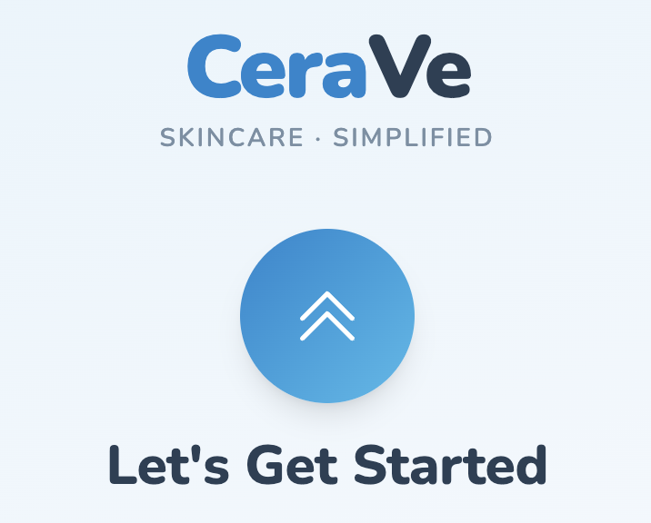
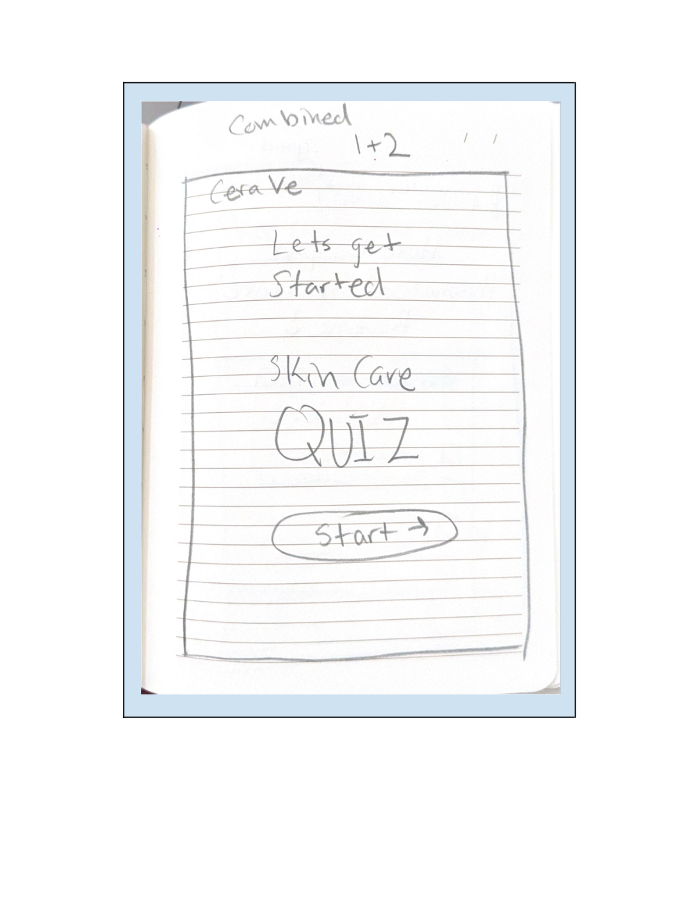
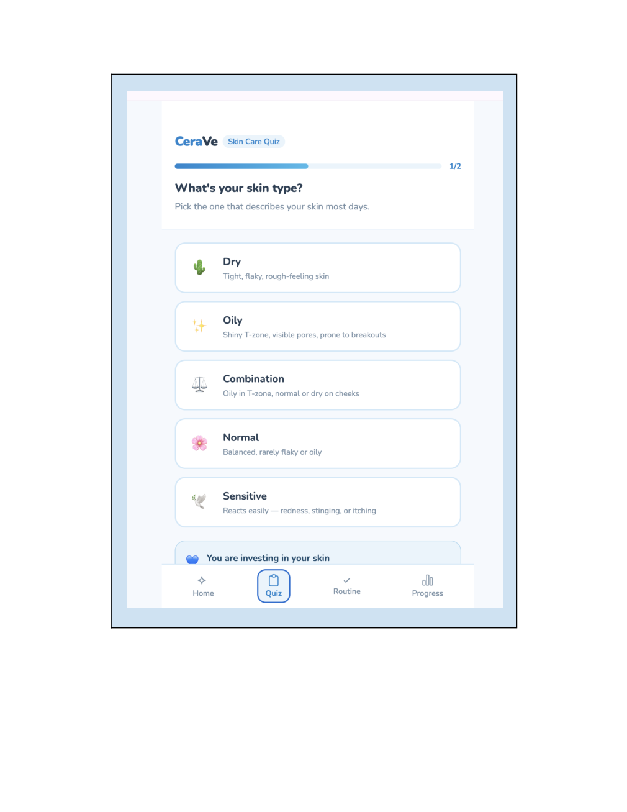
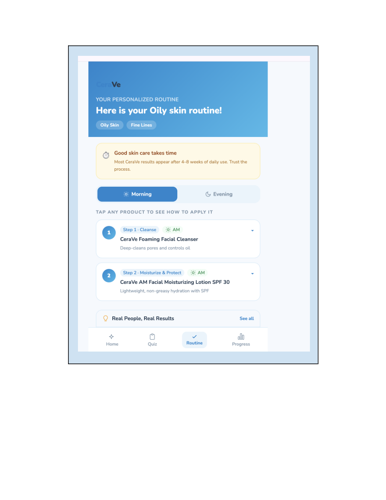
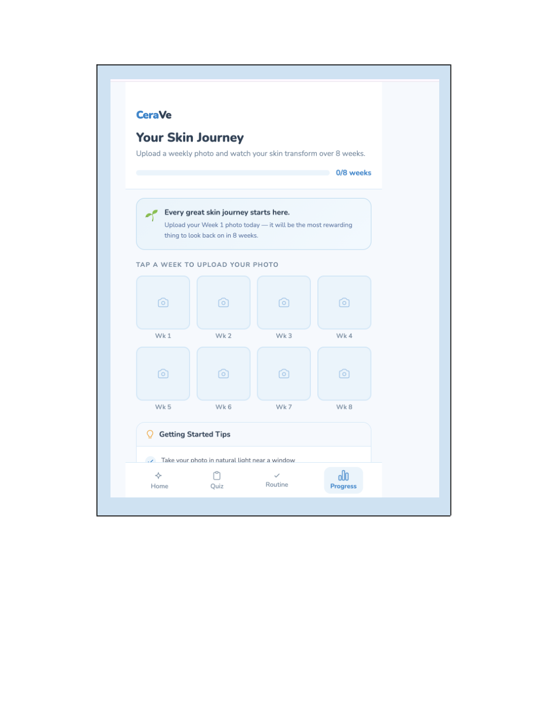

People bounced between TikTok, Reddit, and brand websites.
UX DESIGN / INTERACTIVE PROTOTYPE · 2026
CeraVe Skincare Assistant
A beginner-friendly skincare routine, built around confidence.
A personalized skin-type quiz, step-by-step routine recommendations, and a weekly progress tracker — developed through sketching, prototyping, and usability testing.

01 / Challenge
Making skincare less overwhelming
Research insights provided from seven interviews identified conflicting advice, fear of choosing the wrong product, and frustration when results take time.
Beginners worried about irritation or breakouts.
Slow results could discourage consistency.
02 / Ideation
Three directions, one clear path
I considered a personalized routine builder, a weekly photo progress tracker, and a trusted skincare advice hub. I developed a combined guided routine experience.
A short skin-type quiz.
Explain the purpose of recommended products.
Track progress with weekly photos.
03 / Prototype
From paper sketches to an interactive experience
I sketched an onboarding quiz, personalized routine, product guidance, and progress tracking before translating the experience into a clickable digital prototype.
Choose skin type and concerns.
See morning and evening steps.
Upload weekly photos to track a skincare journey.
04 / Testing
Two testers completed all three tasks
Both testers completed the quiz, found the morning routine, and uploaded a Week 1 progress photo without help. They appreciated the straightforward navigation and explanations.
Completed the usability sessions.
Both participants completed every task without help.
Side-by-side photo comparison and richer progress details.
05 / Reflection
What I would improve next
I would introduce a side-by-side photo comparison and weekly skin check-ins so people can understand changes over time and adjust their routines when needed.
Compare progress photos.
Ask participants to update a routine based on progress.
PROJECT GALLERY
From research to tested experience
Follow the progression from early concepts to a clickable prototype, with attention to reducing decision fatigue and helping first-time users build confidence.



